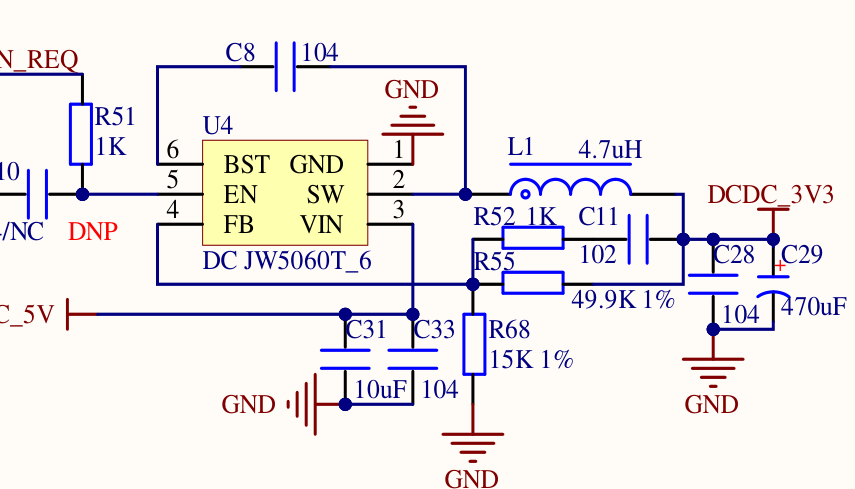

DCDC 外围计算：电感、电容、反馈怎么定值
图上的 4.7µH、470µF、49.9K/15K 不是抄来的——每一个都能从三个公式反推出来。这一章拿本板 U4（DCJW5060，5V→3.3V）和 U6（5V→5.07V）走一遍完整计算，最后给布局六条铁律。

读完这一章，你应该能
- 从 Vin/Vout 算占空比 D，并算出电感纹波电流 ΔIL
- 判断 4.7µH 在小电流与大电流下分别处于 CCM 还是 DCM
- 算输出电容的容性纹波与 ESR 纹波，知道哪个占主导
- 算输入电容的有效值电流，解释为什么要两颗并联
- 从反馈电阻反推输出电压，并算 1% 电阻带来的误差
- 说出布局的六条铁律，并指出本板图上哪个是「反面教材」
4.2.1占空比：Buck 的第一条公式
Buck 稳态下，电感充磁与放磁的伏秒平衡：
(Vin − Vout)·D·T = Vout·(1−D)·T ⇒ D = Vout/Vin
本板 U4：Vin=5V（DCDC_5V），Vout=3.3V ⇒ D=0.66。U6：Vin≈12V，Vout=5.07V ⇒ D=0.42。
实际 D 会比理论略大，因为开关管、电感、走线都有压降。若测得 D 明显偏大（比如 0.75），说明损耗大或有额外压降，效率会掉。
4.2.2电感：纹波、峰值、饱和
开关导通期间电感电流线性上升，纹波峰峰值：
ΔIL = Vout(1−D)/(L·fsw)
取 fsw=500kHz（以手册为准，此处按典型值算）、L=4.7µH、Vout=3.3V、D=0.66：
ΔIL = 3.3×0.34/(4.7µ×500k) = 1.122/2.35 ≈ 0.478 A
若输出 1A，则峰值 Ip=1+0.478/2≈1.24A；若输出只有 0.2A，纹波不变（0.478A），此时 Ip=0.44A、谷值 −0.04A ⇒ 进入 DCM（断续模式）。DCM 下输出电压纹波会变大、环路特性变差，轻载效率也会降——这就是为什么轻载时有时会听到电感「吱」响。
工程上取纹波系数 30%–40%（ΔI/Iout），对应 L 的下限。反过来：
Lmin = Vout(1−D)/(ΔIL,max·f) = 3.3×0.34/(0.4×500k) ≈ 5.6µH（按 40% 纹波、1A 输出）
本板 4.7µH 略低于此，说明设计输出电流不到 1A，或者纹波允许更大。这样算出来的「为什么是 4.7 而不是 10」就有依据了。
饱和电流怎么选
L 的 Isat 必须大于最坏峰值：Ip,max = Iout,max + ΔIL/2，再加 30% 余量。若 Iout,max=1.5A：Ip=1.5+0.24=1.74A，选 Isat≥2.3A。本板用的 4.7µH 模压电感（尺寸约 6×6mm）典型 Isat 在 3A 左右，够用。
4.2.3输出电容：两条纹波叠加
输出纹波由两部分组成，必须分开算再相加：
- 容性纹波：ΔVC = ΔIL/(8·f·C)
- ESR 纹波：ΔVESR = ΔIL·ESR
本板 C28=470µF（固态/铝电解混合），取 C=470µF、ESR=30mΩ：
ΔVC = 0.478/(8×500k×470µ) = 0.478/1.88 ≈ 0.25 mV
ΔVESR = 0.478×0.03 = 14.3 mV
结论很清楚：纹波几乎全由 ESR 决定，多加电容收益很小，换低 ESR 电容才有效。这也解释了为什么旁边还要并一颗 104（C29）：它负责吸收几 MHz 的高频尖峰，电解电容在那个频率已经「看不见」了。
若用纯陶瓷 22µF（ESR≈2mΩ）：ΔVESR=1mV，ΔVC=0.478/(8×500k×22µ)=5.4mV ⇒ 由容性主导。所以「大电容 + 小电容」的组合，本质是在两个频段分别降纹波。
4.2.4输入电容：算的是有效值电流
Buck 的输入电流是脉冲，RMS 值：
ICin,rms ≈ Iout·√(D·(1−D))
Iout=1A、D=0.66 ⇒ ICin,rms=1×√0.224=0.47A。这颗电容要能承受 0.47A 的纹波电流（不是直流！），否则会发热鼓包。本板 C31 10µF + C33 104 并联，10µF/16V 的 X5R 陶瓷额定纹波约 1A，够用；若用铝电解，必须看 Ripple Current 参数。
耐压按 Vin 的 1.5–2 倍选：5V 输入选 16V，12V 输入选 25V。
4.2.5反馈电阻：反推输出电压
可调 Buck 的 Vout = Vref(1+Rtop/Rbot)。DCJW5060 的 Vref≈0.765V（按本板实测 5.07V/3.31V 反推）。
U4：R55=49.9K（上）、R68=15K（下）
Vout=0.765×(1+49.9/15)=0.765×4.327≈3.31V ✓
U6：R56=84.5K、R69=15K
Vout=0.765×(1+84.5/15)=0.765×6.633≈5.07V ✓
为什么用 1% 精度电阻：Vref 本身有 ±2%，电阻各 ±1%，最坏情况输出偏移约 ±3.5%。3.3V 域落在 3.18–3.42V，仍在 SoC 允许范围（3.3V±5%）。若用 5% 电阻，可能超出，表现为「某些批次板子不稳定」。
另外注意 R52 1K + C11 102（1nF）跨接在上反馈电阻上，这是前馈电容，在环路里制造一个零点，提升负载跳变时的响应速度。零点频率 fz≈1/(2πRC)=1/(2π×1K×1n)=159kHz，正好在开关频率 1/3 处，补偿相位裕度。
4.2.6布局六条铁律
- 输入电容紧贴 VIN 与 GND 引脚，回路面积最小。回路每 1nH 在 1A/10ns 的 di/dt 下产生 10V 尖峰。
- SW 节点铜箔尽量小，它是最大的 dv/dt 噪声源，铺大了就是天线。
- FB 走线远离 SW 与电感，从输出电容处取反馈，不要从电感端取。
- 电感下方不要铺地（除非屏蔽型），否则涡流损耗发热。
- 功率地与信号地单点连接，在输出电容负极处汇合。
- 散热焊盘打 4–9 个过孔到内层地，这是 SOT-23-6 封装唯一的散热路径。
反面教材：本板原理图上 U4 的 SW 与 L1 之间没有多余的测试点，这是对的；如果你在 SW 上加一个大焊盘「方便测波形」，就会多出一个噪声辐射源——测波形应该用弹簧地针，短地线回路。
4.2.7实测三步与判据
- 测纹波：示波器 20MHz 带宽限制、AC 耦合、弹簧地（不要用长地夹）。判据：3.3V 输出纹波 <30mVpp。
- 测效率：输入功率 / 输出功率。判据：满载 ≥85%。低于 80% 要查电感 DCR、开关损耗。
- 测负载跳变：电子负载 10%↔90% 跳变，看跌落与恢复。判据：跌落 <5%（165mV），恢复 <100µs。